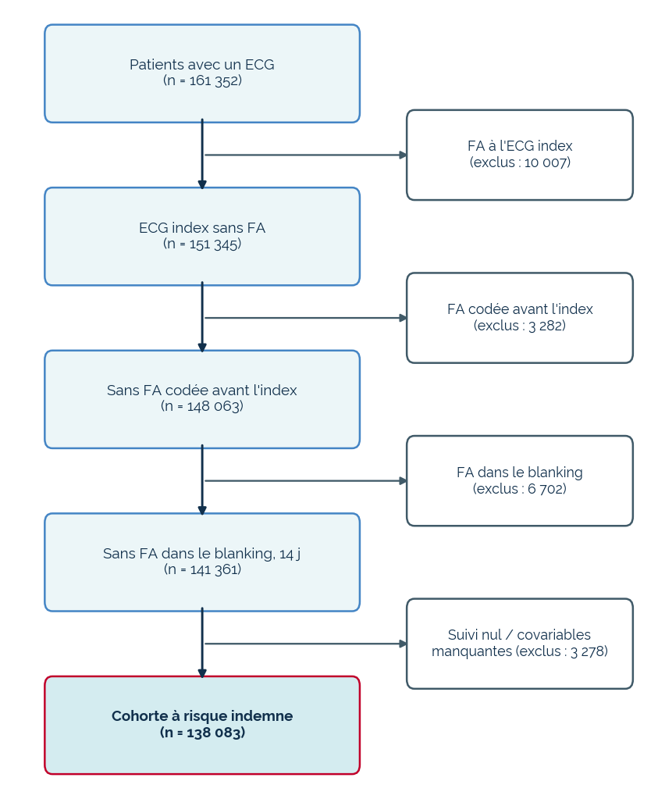
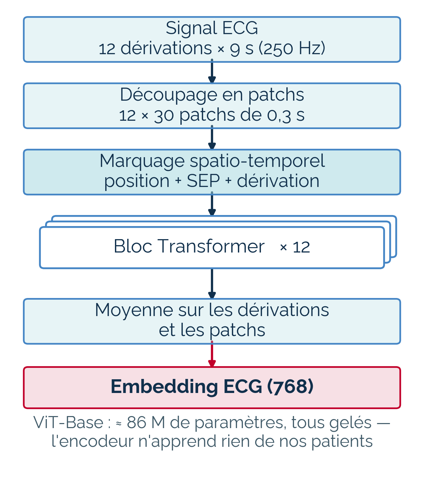
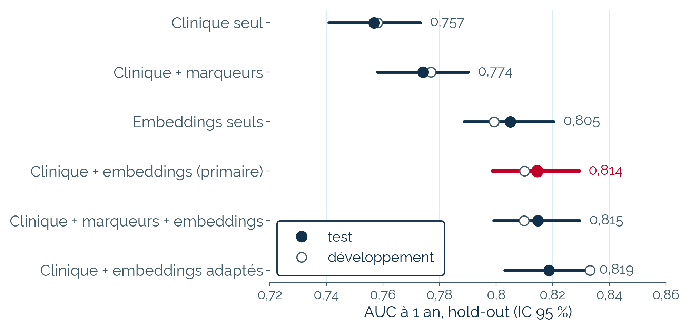
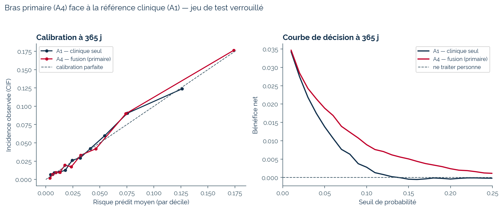
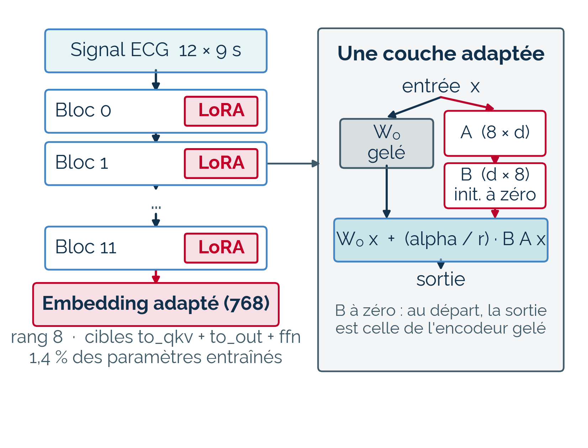
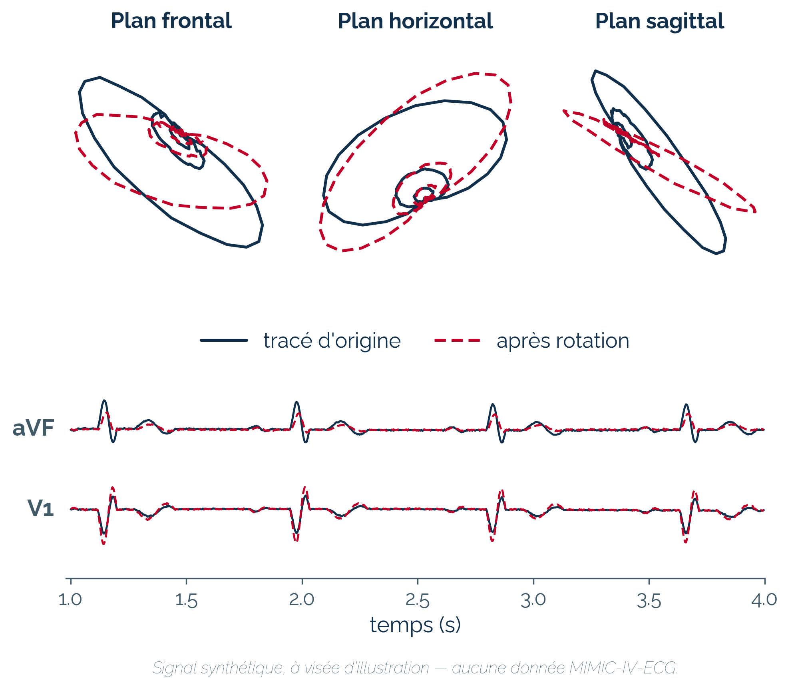
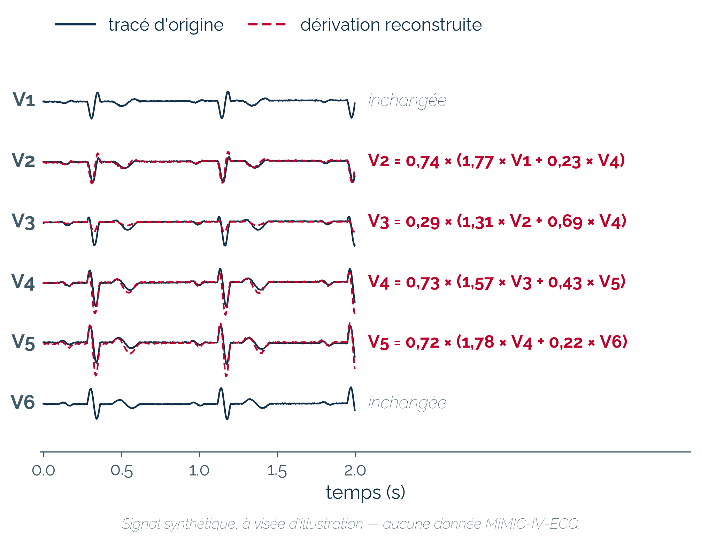
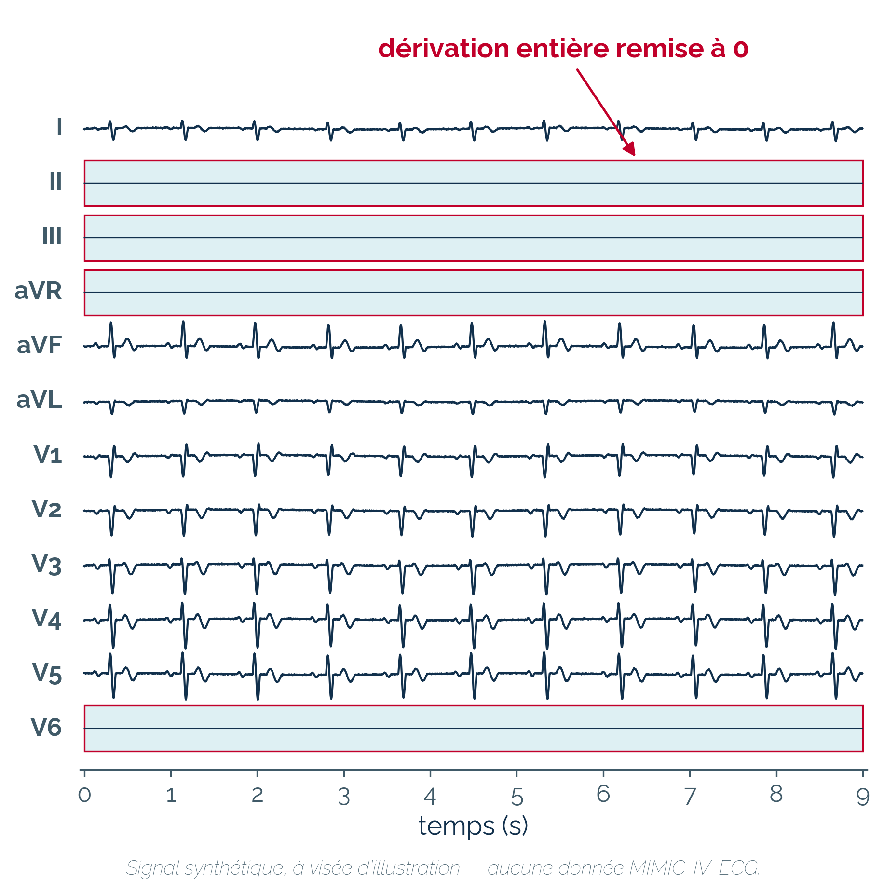
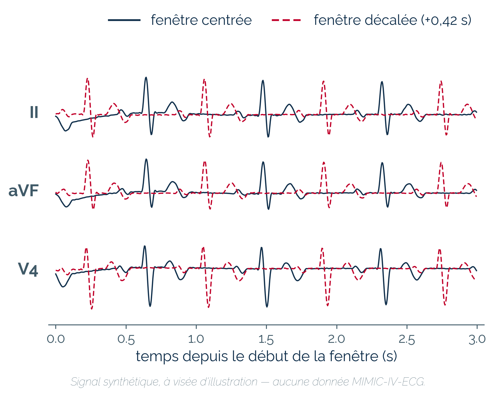
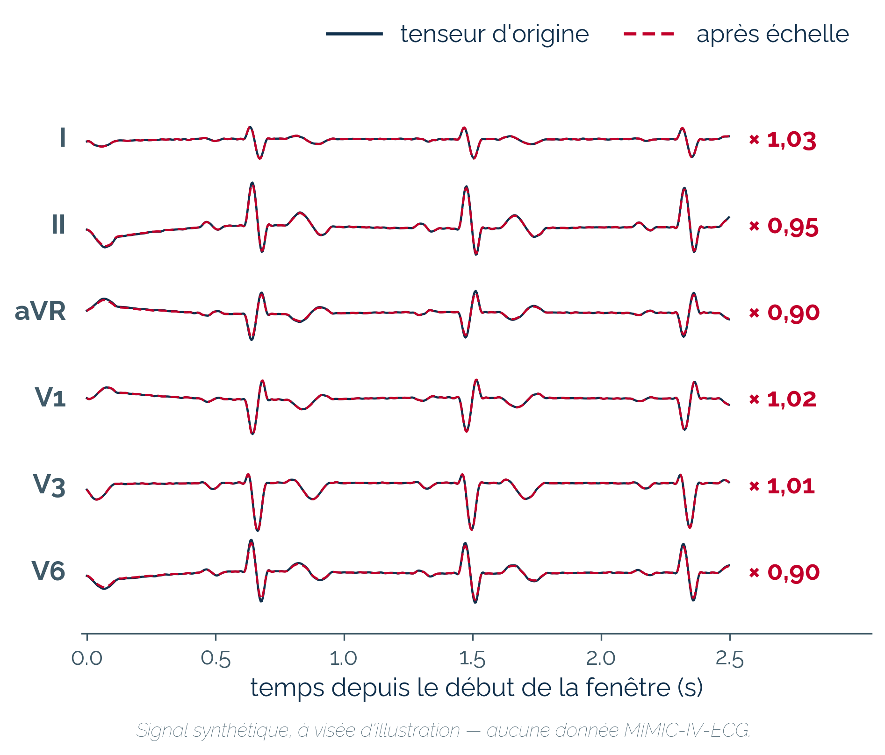

Prédiction de la fibrillation atriale incidente à partir d'ECG
Valeur incrémentale de représentations ECG gelées et adaptées, sous évaluation de survie pré-enregistrée — MIMIC-IV
Rémi Castaing · Conservatoire national des arts et métiers
+0,058d'AUC à un an · IC 95 % [+0,047 ; +0,069]
La fusion du dossier clinique et d'une représentation apprise de l'ECG surpasse le modèle clinique seul — mesuré une seule fois, sur des données verrouillées qu'aucune étape de sélection n'avait touchées.
AUC : aire sous la courbe ROC, la capacité à classer les patients par risque — 0,5 = hasard, 1 = discrimination parfaite.
La question
Prédire une FA future n'est pas détecter une FA présente. La fibrillation atriale, souvent silencieuse, expose à l'AVC et à l'insuffisance cardiaque. Or la littérature ne s'accorde pas : le signal ECG ajoute-t-il quelque chose à ce que le dossier clinique prédit déjà ? C'est cet apport incrémental qui est mesuré ici.
Les données

Cohorte de 138 083 patients de MIMIC-IV, indemnes de FA à leur ECG index.
FA antérieure exclue (diagnostics + rapports d'ECG).
Décès traité en risque concurrent ; censure pondérée (IPCW).
Jeu de test de 27 618 patients (838 FA à un an) mis sous clé dès l'assemblage.
La méthode
Six modèles emboîtés, du clinique seul à la fusion : chaque marche n'ajoute qu'une information, l'écart entre deux marches est donc attribuable à cette information seule. Trois fuites neutralisées par construction :
aucune variable postérieure à l'ECG index ;
séparation train/test au niveau patient, jamais ECG ;
encodeur pré-entraîné sans chevauchement avec l'évaluation.
L'encodeur ST-MEM

12 dérivations × 9 s → un vecteur de 768 dimensions. 86 millions de paramètres, tous gelés : l'encodeur n'apprend rien de nos patients.
Le verrou : une passe unique, pré-enregistrée
Six bras, cinq comparaisons et leurs interdits fixés dans un document signé avant toute ouverture du jeu de test. Ouvert une seule fois, le 27 août 2026 : rien n'a pu être choisi après coup.
Résultats
L'apport de l'ECG est établi ; celui de l'adaptation de l'encodeur ne l'est pas.

Les six bras sur le jeu de test verrouillé : AUC à un an, IC 95 % bootstrap au niveau patient. L'échelle tient marche par marche — et les embeddings seuls dépassent déjà le dossier clinique complet.
Les cinq comparaisons pré-enregistrées : écarts d'AUC appariés, seuls interprétables. Le contraste primaire — fusion contre clinique seul — est mis en évidence.

Les risques prédits sont directement utilisables : pentes de calibration 0,99–1,06, bénéfice net supérieur sur toute la plage de seuils de décision.
Ce qui n'est pas établi
Une fois les embeddings présents, les marqueurs conventionnels n'ajoutent plus rien (+0,0003) : la représentation apprise couvre leur information — l'inverse n'est pas vrai.
L'apport de l'adaptation de l'encodeur : +0,004, IC 95 % [−0,001 ; +0,010]. L'intervalle contient zéro : l'apport n'est pas établi.
Adapter l'encodeur : LoRA et cinq augmentations
Le dernier barreau de l'échelle adapte l'encodeur par LoRA (Low-Rank Adaptation), avec cinq augmentations du signal d'apprentissage. En développement, ce bras était le favori — mais aussi le plus sélectionné. Sur le jeu verrouillé, c'est lui qui recule le plus (−0,014) : une partie de son avance venait de la sélection, pas de l'adaptation.

LoRA (Low-Rank Adaptation)1,4 % des paramètres entraînés, l'encodeur reste gelé.

Rotation VCGTourner le cœur entier, pas chaque dérivation — dipôle reconstruit, tourné, reprojeté.

SimVEAReconstruire une précordiale à partir de ses voisines.

MasquageEffacer des dérivations ou 0,5 s de signal.

DécalageDéplacer la fenêtre de 9 s, sans toucher au signal.

ÉchelleUn gain par dérivation, tiré au sort à chaque époque.
Limites
Biais de surveillance. Un patient plus surveillé a plus de FA détectée ; le verrou ne lève pas ce biais — il est documenté et borné, non ignoré. C'est la limite la plus sérieuse.
Pas de validation externe. Même hôpital, mêmes pratiques de codage : la généralisation reste à démontrer — c'est la perspective immédiate.
Puissance. 838 événements suffisent pour des écarts de cinq centièmes, pas de quelques millièmes : le protocole avait anticipé cette borne.
À retenir
L'ECG apporte une information prédictive propre, que le dossier clinique ne contient pas — mesurée sur données verrouillées.
La représentation apprise couvre l'information des marqueurs conventionnels ; l'inverse n'est pas vrai.
Aucune utilité clinique n'est revendiquée avant validation externe.